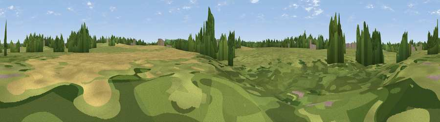

Cobbs Mill
#46227 in England · top 100% of its area beats it · near Sayers CommonThe view, rendered

A 360° render of this exact spot computed from the terrain model, tree cover and land cover — summer colours, afternoon light, calibrated against photographs of famous viewpoints. Real trees, hedges and buildings will differ in detail.
The panorama
Grey silhouette: terrain skyline in each direction (720 bearings, Earth curvature and refraction included). Dashed green: skyline with trees (+15 m) and buildings (+8 m) as obstacles. Blue strip: how far the ground is visible on each bearing.
Where the view opens
Wedge length = distance to the farthest visible ground on that bearing (vegetation-aware). Rings at 10, 25 and 50 km.
What fills the view
76% grassland · 19% woodland · 4% built-up · 1% cropland
Angular shares of the visible panorama (visual magnitude), not map area. Landscape diversity 0.31 (0–1 Shannon).
Key numbers
More beautiful places nearby
The staircase of upgrades: each row has a higher view potential than everything closer. Driving times are estimates from straight-line distance, calibrated against real road routing — check an actual route before setting out.
| Place | Direction | Drive | Score |
|---|---|---|---|
| Viewpoint near Hickstead | NNW · 1 km | ~3 min | 25.7 |
| Downland Viewpoint, from the Lower Weald | ESE · 3 km | ~7 min | 27.8 |
| Wolstonbury Hill | S · 5 km | ~11 min | 79.6 |
| Viewpoint near Westmeston | SE · 8 km | ~16 min | 81.1 |
| Devil's Dyke | SSW · 8 km | ~17 min | 81.2 |
| Ditchling Beacon | SE · 8 km | ~17 min | 81.8 |
| Fulking Hill | SSW · 9 km | ~17 min | 82.2 |
| Viewpoint near Steyning | WSW · 14 km | ~26 min | 82.6 |
50.95595, -0.18710 · source: osm viewpoint · position refined by local search. Computed location — check access rights before visiting.